SQL is a standard language for accessing and manipulating databases.
What is SQL?
SQL stands for Structured Query Language
SQL lets you access and manipulate databases
SQL became a standard of the American National Standards Institute (ANSI) in 1986, and of the International
Organization for Standardization (ISO) in 1987
What Can SQL do?
SQL can execute queries against a database
SQL can retrieve data from a database
SQL can insert records in a database
SQL can update records in a database
SQL can delete records from a database
SQL can create new databases
SQL can create new tables in a database
SQL can create stored procedures in a database
SQL can create views in a database
SQL can set permissions on tables, procedures, and views
SQL is a Standard - BUT....
Although SQL is an ANSI/ISO standard, there are different versions of the SQL language.
However, to be compliant with the ANSI standard, they all support at least the major commands (such as
SELECT, UPDATE, DELETE, INSERT, WHERE) in a similar manner.
Note: Most of the SQL database programs also have their own proprietary extensions in addition to
the
SQL
standard!
What is RDBMS?
RDBMS stands for Relational Database Management System.
RDBMS is a program used to maintain a relational database.
RDBMS is the basis for all modern database systems such as MySQL, Microsoft SQL Server, Oracle, and
Microsoft Access.
RDBMS uses SQL queries to access the data in the database.
What is a Database Table?
A table is a collection of related data entries, and it consists of columns and rows.
A column holds specific information about every record in the table.
A record (or row) is each individual entry that exists in a table.
Look at a selection from the Northwind "Customers" table:
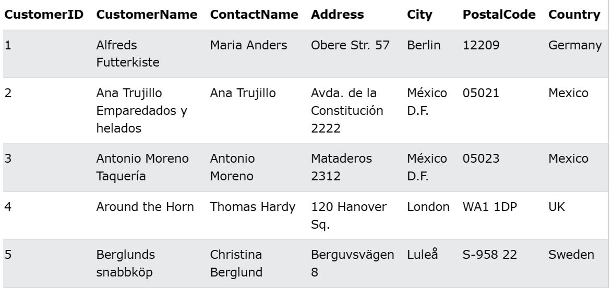
The columns in the "Customers" table above are: CustomerID, CustomerName, ContactName, Address,
City,
PostalCode and Country.
The table has 5 records (rows).
What is a Relational Database?
A relational database defines database relationships in the form of tables. The tables are related to each
other - based on data common to each.
Look at the following three tables "Customers", "Orders", and "Shippers" from the Northwind database:
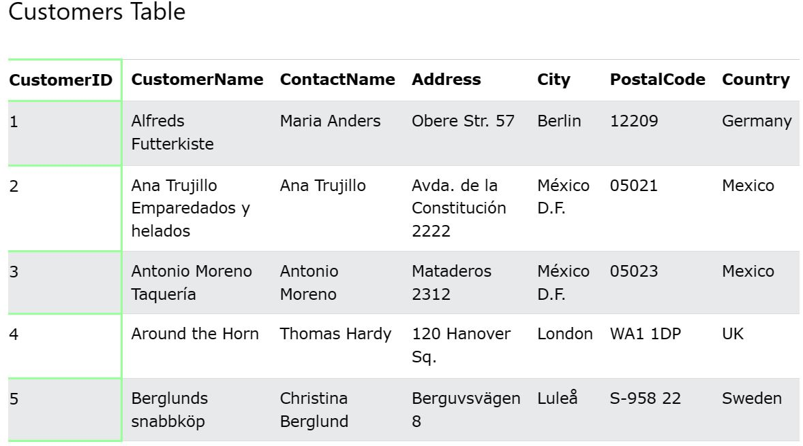
The relationship between the "Customers" table and the "Orders" table is the CustomerID column:
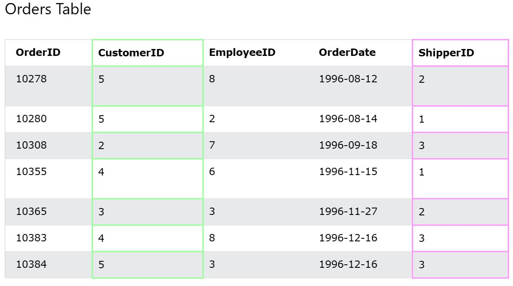
Main Queries of SQL
(i) SQL CREATE DATABASE Statement
The CREATE DATABASE statement is used to create a new SQL database.
Syntax :-
CREATE DATABASE databasename;
CREATE DATABASE Example :-
CREATE DATABASE BCA;
(ii) SQL CREATE TABLE Statement
The CREATE TABLE statement is used to create a new table in a database.
The column parameters specify the names of the columns of the table.
The datatype parameter specifies the type of data the column can hold (e.g. varchar, integer, date, etc.).
The PersonID column is of type int and will hold an integer.
The LastName, FirstName, Address, and City columns are of type varchar and will hold characters, and the
maximum length for these fields is 255 characters.
(iii) SQL INSERT INTO Statement
The INSERT INTO statement is used to insert new records in a table.
Syntax :-
INSERT INTO table_name (column1, column2, column3, ...)
VALUES (value1, value2, value3, ...);
or
INSERT INTO table_name
VALUES (value1, value2, value3, ...);
INSERT INTO Example :-
INSERT INTO Customers (CustomerName, ContactName, Address, City, PostalCode, Country)
VALUES ('Cardinal', 'Tom B. Erichsen', 'Skagen 21', 'Stavanger', '4006', 'Norway');
(iv) SQL SELECT Statement
The SELECT statement is used to select data from a database.
Syntax :-
SELECT column1, column2, ...
FROM table_name;
Example of Select Statement :-
SELECT * FROM Student;
-+------+--------+---------------------+-------+------+------------+
| roll | name | address | marks | age | department |
+------+--------+---------------------+-------+------+------------+
| 1 | anshul | #454 dashmesh nagar | NULL | NULL | HR |
| 2 | mohit | #454 nagar | NULL | NULL | IT |
| 3 | ajay | #35 nagar | NULL | NULL | HR |
| 4 | sumit | #45 newdelhi | NULL | NULL | IT |
| 5 | manjit | #23 ramdarbar | NULL | NULL | HR |
+------+--------+---------------------+-------+------+------------+
5 rows in set (0.0007 sec)
MySQL localhost:3306 ssl anshul SQL >
(v) SQL UPDATE Statement
The UPDATE statement is used to modify the existing records in a table.
Syntax :-
UPDATE table_name
SET column1 = value1, column2 = value2, ...
WHERE condition;
Example of Update Statement :-
-+------+--------+---------------------+-------+------+------------+
| roll | name | address | marks | age | department |
+------+--------+---------------------+-------+------+------------+
| 1 | anshul | #454 dashmesh nagar | NULL | NULL | HR |
| 2 | mohit | #454 nagar | NULL | NULL | IT |
| 3 | ajay | #35 nagar | NULL | NULL | HR |
| 4 | sumit | #45 newdelhi | NULL | NULL | IT |
| 5 | manjit | #23 ramdarbar | NULL | NULL | HR |
+------+--------+---------------------+-------+------+------------+
5 rows in set (0.0007 sec)
MySQL localhost:3306 ssl anshul SQL >
MySQL localhost:3306 ssl anshul SQL > update student
-> set name="Anshul_kumar"
-> where roll=1;
Query OK, 1 row affected (0.1025 sec)
Rows matched: 1 Changed: 1 Warnings: 0
MySQL localhost:3306 ssl anshul SQL > select * from student;
+------+--------------+---------------------+-------+------+------------+
| roll | name | address | marks | age | department |
+------+--------------+---------------------+-------+------+------------+
| 1 | Anshul_kumar | #454 dashmesh nagar | NULL | NULL | HR |
| 2 | mohit | #454 nagar | NULL | NULL | IT |
| 3 | ajay | #35 nagar | NULL | NULL | HR |
| 4 | sumit | #45 newdelhi | NULL | NULL | IT |
| 5 | manjit | #23 ramdarbar | NULL | NULL | HR |
+------+--------------+---------------------+-------+------+------------+
5 rows in set (0.0009 sec)
(vi) SQL DELETE Statement
The DELETE statement is used to delete existing records in a table.
Syntax :-
DELETE FROM table_name WHERE condition;
Example of Delete Statement :-
-+------+--------+---------------------+-------+------+------------+
| roll | name | address | marks | age | department |
+------+--------+---------------------+-------+------+------------+
| 1 | anshul | #454 dashmesh nagar | NULL | NULL | HR |
| 2 | mohit | #454 nagar | NULL | NULL | IT |
| 3 | ajay | #35 nagar | NULL | NULL | HR |
| 4 | sumit | #45 newdelhi | NULL | NULL | IT |
| 5 | manjit | #23 ramdarbar | NULL | NULL | HR |
+------+--------+---------------------+-------+------+------------+
5 rows in set (0.0007 sec)
MySQL localhost:3306 ssl anshul SQL >
MySQL localhost:3306 ssl anshul SQL > delete from student
-> where roll=5;
Query OK, 1 row affected (0.0482 sec)
MySQL localhost:3306 ssl anshul SQL > select * from student;
+------+--------------+---------------------+-------+------+------------+
| roll | name | address | marks | age | department |
+------+--------------+---------------------+-------+------+------------+
| 1 | Anshul_kumar | #454 dashmesh nagar | NULL | NULL | HR |
| 2 | mohit | #454 nagar | NULL | NULL | IT |
| 3 | ajay | #35 nagar | NULL | NULL | HR |
| 4 | sumit | #45 newdelhi | NULL | NULL | IT |
+------+--------------+---------------------+-------+------+------------+
4 rows in set (0.0009 sec)
(vii) SQL ALTER TABLE Statement
The ALTER TABLE statement is used to add, delete, or modify columns in an existing table.
The ALTER TABLE statement is also used to add and drop various constraints on an existing table.
Syntax of Alter table Add column:-
ALTER TABLE table_name
ADD column_name datatype;
Example of alter Statement :-
MySQL localhost:3306 ssl anshul SQL > desc student;
+------------+-------------+------+-----+---------+-------+
| Field | Type | Null | Key | Default | Extra |
+------------+-------------+------+-----+---------+-------+
| roll | int(11) | YES | | NULL | |
| name | varchar(23) | YES | | NULL | |
| address | varchar(50) | YES | | NULL | |
| marks | int(11) | YES | | NULL | |
| age | int(11) | YES | | NULL | |
| department | varchar(20) | YES | | NULL | |
+------------+-------------+------+-----+---------+-------+
6 rows in set (0.0015 sec)
MySQL localhost:3306 ssl anshul SQL > alter table student
-> add column s_id int;
Query OK, 0 rows affected (0.7192 sec)
Records: 0 Duplicates: 0 Warnings: 0
MySQL localhost:3306 ssl anshul SQL > desc student;
+------------+-------------+------+-----+---------+-------+
| Field | Type | Null | Key | Default | Extra |
+------------+-------------+------+-----+---------+-------+
| roll | int(11) | YES | | NULL | |
| name | varchar(23) | YES | | NULL | |
| address | varchar(50) | YES | | NULL | |
| marks | int(11) | YES | | NULL | |
| age | int(11) | YES | | NULL | |
| department | varchar(20) | YES | | NULL | |
| s_id | int(11) | YES | | NULL | |
+------------+-------------+------+-----+---------+-------+
7 rows in set (0.0016 sec)
MySQL localhost:3306 ssl anshul SQL >
SQL Aggregate Functions
An aggregate function is a function that performs a calculation on a set of values, and returns a
single value.
The most commonly used SQL aggregate functions are:
MIN() - returns the smallest value within the selected column
MAX() - returns the largest value within the selected column
COUNT() - returns the number of rows in a set
SUM() - returns the total sum of a numerical column
AVG() - returns the average value of a numerical column
Example :-
MySQL localhost:3306 ssl anshul SQL > select * from student;
+------+--------------+---------------------+-------+------+------------+------+
| roll | name | address | marks | age | department | s_id |
+------+--------------+---------------------+-------+------+------------+------+
| 1 | Anshul_kumar | #454 dashmesh nagar | 10 | NULL | HR | NULL |
| 2 | mohit | #454 nagar | 20 | NULL | IT | NULL |
| 3 | ajay | #35 nagar | 30 | NULL | HR | NULL |
| 4 | sumit | #45 newdelhi | 80 | NULL | IT | NULL |
+------+--------------+---------------------+-------+------+------------+------+
4 rows in set (0.0003 sec)
MySQL localhost:3306 ssl anshul SQL > select min(marks)
-> from student;
+------------+
| min(marks) |
+------------+
| 10 |
+------------+
1 row in set (0.0234 sec)
MySQL localhost:3306 ssl anshul SQL > select * from student;
+------+--------------+---------------------+-------+------+------------+------+
| roll | name | address | marks | age | department | s_id |
+------+--------------+---------------------+-------+------+------------+------+
| 1 | Anshul_kumar | #454 dashmesh nagar | 10 | NULL | HR | NULL |
| 2 | mohit | #454 nagar | 20 | NULL | IT | NULL |
| 3 | ajay | #35 nagar | 30 | NULL | HR | NULL |
| 4 | sumit | #45 newdelhi | 80 | NULL | IT | NULL |
+------+--------------+---------------------+-------+------+------------+------+
4 rows in set (0.0003 sec)
MySQL localhost:3306 ssl anshul SQL > select max(marks)
-> from student;
+------------+
| max(marks) |
+------------+
| 80 |
+------------+
1 row in set (0.0004 sec)
MySQL localhost:3306 ssl anshul SQL > select * from student;
+------+--------------+---------------------+-------+------+------------+------+
| roll | name | address | marks | age | department | s_id |
+------+--------------+---------------------+-------+------+------------+------+
| 1 | Anshul_kumar | #454 dashmesh nagar | 10 | NULL | HR | NULL |
| 2 | mohit | #454 nagar | 20 | NULL | IT | NULL |
| 3 | ajay | #35 nagar | 30 | NULL | HR | NULL |
| 4 | sumit | #45 newdelhi | 80 | NULL | IT | NULL |
+------+--------------+---------------------+-------+------+------------+------+
4 rows in set (0.0003 sec)
MySQL localhost:3306 ssl anshul SQL > select count(roll)
-> from student;
+-------------+
| count(roll) |
+-------------+
| 4 |
+-------------+
1 row in set (0.0115 sec)
MySQL localhost:3306 ssl anshul SQL > select * from student;
+------+--------------+---------------------+-------+------+------------+------+
| roll | name | address | marks | age | department | s_id |
+------+--------------+---------------------+-------+------+------------+------+
| 1 | Anshul_kumar | #454 dashmesh nagar | 10 | NULL | HR | NULL |
| 2 | mohit | #454 nagar | 20 | NULL | IT | NULL |
| 3 | ajay | #35 nagar | 30 | NULL | HR | NULL |
| 4 | sumit | #45 newdelhi | 80 | NULL | IT | NULL |
+------+--------------+---------------------+-------+------+------------+------+
4 rows in set (0.0003 sec)
MySQL localhost:3306 ssl anshul SQL > select sum(marks)
-> from student;
+------------+
| sum(marks) |
+------------+
| 140 |
+------------+
1 row in set (0.0007 sec)
MySQL localhost:3306 ssl anshul SQL > select * from student;
+------+--------------+---------------------+-------+------+------------+------+
| roll | name | address | marks | age | department | s_id |
+------+--------------+---------------------+-------+------+------------+------+
| 1 | Anshul_kumar | #454 dashmesh nagar | 10 | NULL | HR | NULL |
| 2 | mohit | #454 nagar | 20 | NULL | IT | NULL |
| 3 | ajay | #35 nagar | 30 | NULL | HR | NULL |
| 4 | sumit | #45 newdelhi | 80 | NULL | IT | NULL |
+------+--------------+---------------------+-------+------+------------+------+
4 rows in set (0.0003 sec)
MySQL localhost:3306 ssl anshul SQL > select avg(marks)
-> from student;
+------------+
| avg(marks) |
+------------+
| 35.0000 |
+------------+
1 row in set (0.0007 sec)
SQL LIKE Operator
The LIKE operator is used in a WHERE clause to search for a specified pattern in a column.
There are two wildcards often used in conjunction with the LIKE operator:
The percent sign % represents zero, one, or multiple characters
The underscore sign _ represents one, single character
Example :-
MySQL localhost:3306 ssl anshul SQL > select * from student;
+------+--------------+---------------------+-------+------+------------+------+
| roll | name | address | marks | age | department | s_id |
+------+--------------+---------------------+-------+------+------------+------+
| 1 | Anshul_kumar | #454 dashmesh nagar | 10 | NULL | HR | NULL |
| 2 | mohit | #454 nagar | 20 | NULL | IT | NULL |
| 3 | ajay | #35 nagar | 30 | NULL | HR | NULL |
| 4 | sumit | #45 newdelhi | 80 | NULL | IT | NULL |
+------+--------------+---------------------+-------+------+------------+------+
4 rows in set (0.0011 sec)
MySQL localhost:3306 ssl anshul SQL > select * from student
-> where name like 'a%';
+------+--------------+---------------------+-------+------+------------+------+
| roll | name | address | marks | age | department | s_id |
+------+--------------+---------------------+-------+------+------------+------+
| 1 | Anshul_kumar | #454 dashmesh nagar | 10 | NULL | HR | NULL |
| 3 | ajay | #35 nagar | 30 | NULL | HR | NULL |
+------+--------------+---------------------+-------+------+------------+------+
2 rows in set (0.0007 sec)
SQL Views
A view contains rows and columns, just like a real table. The fields in a view are fields from one or
more real tables in the database.
Example of SQL VIEWS :-
-- Create StudentDetails table
CREATE TABLE StudentDetails (
S_ID INT PRIMARY KEY,
NAME VARCHAR(255),
ADDRESS VARCHAR(255)
);
INSERT INTO StudentDetails (S_ID, NAME, ADDRESS)
VALUES
(1, 'Harsh', 'Kolkata'),
(2, 'Ashish', 'Durgapur'),
(3, 'Pratik', 'Delhi'),
(4, 'Dhanraj', 'Bihar'),
(5, 'Ram', 'Rajasthan');
-- Create StudentMarks table
CREATE TABLE StudentMarks (
ID INT PRIMARY KEY,
NAME VARCHAR(255),
Marks INT,
Age INT
);
INSERT INTO StudentMarks (ID, NAME, Marks, Age)
VALUES
(1, 'Harsh', 90, 19),
(2, 'Suresh', 50, 20),
(3, 'Pratik', 80, 19),
(4, 'Dhanraj', 95, 21),
(5, 'Ram', 85, 18);
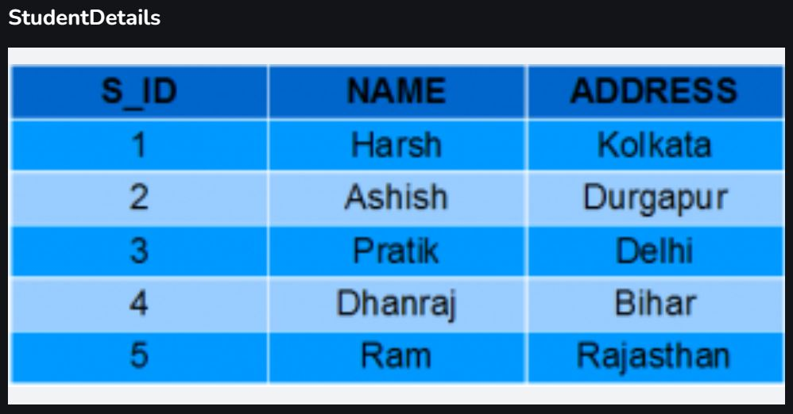
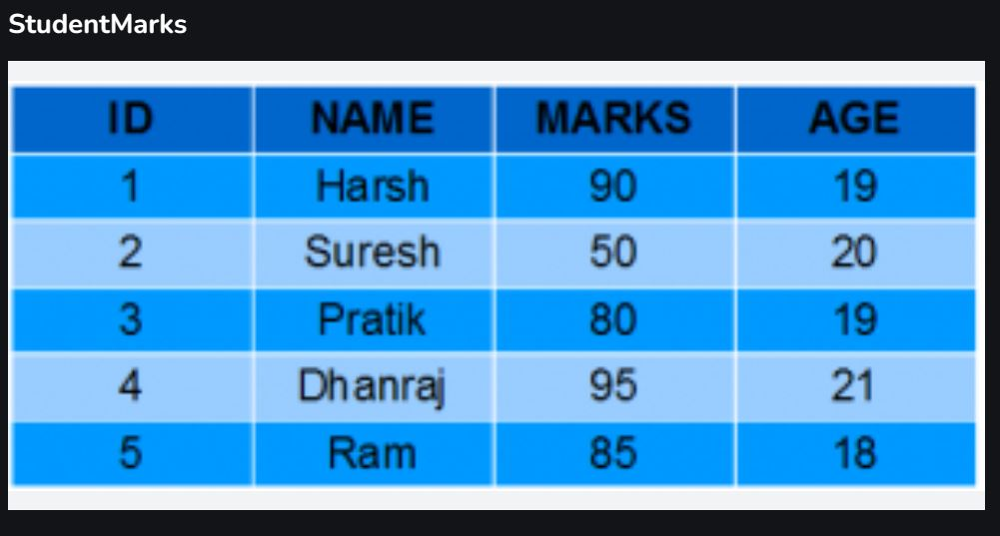
CREATE VIEW StudentNames AS
SELECT S_ID, NAME
FROM StudentDetails
ORDER BY NAME;
If we now query the view as,
SELECT * FROM StudentNames;
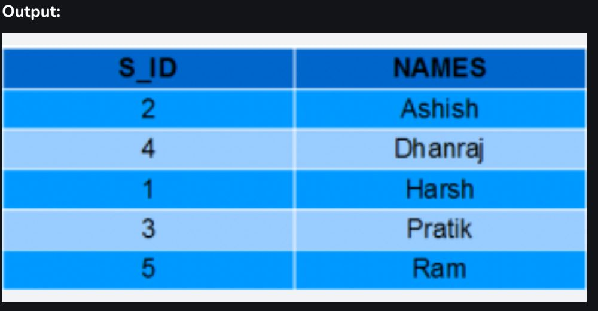
NULL values in SQL
In SQL there may be some records in a table that do not have values or data for every field and those
fields are termed as a NULL value.
NULL values could be possible because at the time of data entry information is not available. So SQL
supports a special value known as NULL which is used to represent the values of attributes that may be
unknown or not apply to a tuple. SQL places a NULL value in the field in the absence of a user-defined
value. For example, the Apartment_number attribute of an address applies only to addresses that are in
apartment buildings and not to other types of residences.
So, NULL values are those values in which there is no data value in the particular field in the
table.
Example :-
MySQL localhost:3306 ssl anshul SQL > select * from student;
+------+--------------+---------------------+-------+------+------------+------+
| roll | name | address | marks | age | department | s_id |
+------+--------------+---------------------+-------+------+------------+------+
| 1 | Anshul_kumar | #454 dashmesh nagar | 10 | NULL | HR | NULL |
| 2 | mohit | #454 nagar | 20 | NULL | IT | NULL |
| 3 | ajay | #35 nagar | 30 | NULL | HR | NULL |
| 4 | sumit | #45 newdelhi | 80 | NULL | IT | NULL |
+------+--------------+---------------------+-------+------+------------+------+
4 rows in set (0.0006 sec)
MySQL localhost:3306 ssl anshul SQL > select name, roll from student where age is null;
+--------------+------+
| name | roll |
+--------------+------+
| Anshul_kumar | 1 |
| mohit | 2 |
| ajay | 3 |
| sumit | 4 |
+--------------+------+
4 rows in set (0.0007 sec)
MySQL localhost:3306 ssl anshul SQL > select * from student;
+------+--------------+---------------------+-------+------+------------+------+
| roll | name | address | marks | age | department | s_id |
+------+--------------+---------------------+-------+------+------------+------+
| 1 | Anshul_kumar | #454 dashmesh nagar | 10 | NULL | HR | NULL |
| 2 | mohit | #454 nagar | 20 | NULL | IT | NULL |
| 3 | ajay | #35 nagar | 30 | 45 | HR | NULL |
| 4 | sumit | #45 newdelhi | 80 | NULL | IT | NULL |
+------+--------------+---------------------+-------+------+------------+------+
4 rows in set (0.0007 sec)
MySQL localhost:3306 ssl anshul SQL > select name from student where age is not null;
+------+
| name |
+------+
| ajay |
+------+
1 row in set (0.0006 sec)
SQL GROUP BY Statement
The GROUP BY statement groups rows that have the same values into summary rows, like "find the number of
customers in each country".
The GROUP BY statement is often used with aggregate functions (COUNT(), MAX(), MIN(), SUM(), AVG()) to
group the result-set by one or more columns.
Example of Group by statement :-
MySQL localhost:3306 ssl anshul SQL > select * from student;
+------+--------------+---------------------+-------+------+------------+------+---------+
| roll | name | address | marks | age | department | s_id | country |
+------+--------------+---------------------+-------+------+------------+------+---------+
| 1 | Anshul_kumar | #454 dashmesh nagar | 10 | NULL | HR | NULL | India |
| 2 | mohit | #454 nagar | 20 | NULL | IT | NULL | America |
| 3 | ajay | #35 nagar | 30 | 45 | HR | NULL | India |
| 4 | sumit | #45 newdelhi | 80 | NULL | IT | NULL | India |
+------+--------------+---------------------+-------+------+------------+------+---------+
4 rows in set (0.0006 sec)
MySQL localhost:3306 ssl anshul SQL > select count(department), country
-> from student group by country;
+-------------------+---------+
| count(department) | country |
+-------------------+---------+
| 1 | America |
| 3 | India |
+-------------------+---------+
2 rows in set (0.0504 sec)
MySQL localhost:3306 ssl anshul SQL > select * from student;
+------+--------------+---------------------+-------+------+------------+------+---------+
| roll | name | address | marks | age | department | s_id | country |
+------+--------------+---------------------+-------+------+------------+------+---------+
| 1 | Anshul_kumar | #454 dashmesh nagar | 10 | NULL | HR | NULL | India |
| 2 | mohit | #454 nagar | 20 | NULL | IT | NULL | America |
| 3 | ajay | #35 nagar | 30 | 45 | HR | NULL | India |
| 4 | sumit | #45 newdelhi | 80 | NULL | IT | NULL | India |
+------+--------------+---------------------+-------+------+------------+------+---------+
4 rows in set (0.0007 sec)
MySQL localhost:3306 ssl anshul SQL > select count(roll), country from student group by country;
+-------------+---------+
| count(roll) | country |
+-------------+---------+
| 1 | America |
| 3 | India |
+-------------+---------+
2 rows in set (0.0007 sec)
COMMIT and ROLLBACK in SQL
COMMIT in SQL is a transaction control language that is used to permanently save the changes done in the
transaction in tables/databases. The database cannot regain its previous state after its execution of
commit.
ROLLBACK in SQL is a transactional control language that is used to undo the transactions that have not
been saved in the database. The command is only been used to undo changes since the last COMMIT.
Example of Commit and rollback statement :-
MySQL localhost:3306 ssl anshul SQL > select * from student;
+------+--------------+---------------------+-------+------+------------+------+---------+
| roll | name | address | marks | age | department | s_id | country |
+------+--------------+---------------------+-------+------+------------+------+---------+
| 1 | Anshul_kumar | #454 dashmesh nagar | 10 | NULL | HR | NULL | India |
| 2 | mohit | #454 nagar | 20 | NULL | IT | NULL | America |
| 3 | ajay | #35 nagar | 30 | 45 | HR | NULL | India |
| 4 | sumit | #45 newdelhi | 80 | NULL | IT | NULL | India |
+------+--------------+---------------------+-------+------+------------+------+---------+
4 rows in set (0.0007 sec)
MySQL localhost:3306 ssl anshul SQL > update student
-> set marks=40
-> where roll=1;
Query OK, 1 row affected (0.0425 sec)
Rows matched: 1 Changed: 1 Warnings: 0
MySQL localhost:3306 ssl anshul SQL > select * from student;
+------+--------------+---------------------+-------+------+------------+------+---------+
| roll | name | address | marks | age | department | s_id | country |
+------+--------------+---------------------+-------+------+------------+------+---------+
| 1 | Anshul_kumar | #454 dashmesh nagar | 40 | NULL | HR | NULL | India |
| 2 | mohit | #454 nagar | 20 | NULL | IT | NULL | America |
| 3 | ajay | #35 nagar | 30 | 45 | HR | NULL | India |
| 4 | sumit | #45 newdelhi | 80 | NULL | IT | NULL | India |
+------+--------------+---------------------+-------+------+------------+------+---------+
4 rows in set (0.0007 sec)
MySQL localhost:3306 ssl anshul SQL > commit;
Query OK, 0 rows affected (0.0002 sec)
MySQL localhost:3306 ssl anshul SQL > delete from student;
Query OK, 4 rows affected (0.0553 sec)
MySQL localhost:3306 ssl anshul SQL > select * from student;
Empty set (0.0008 sec)
MySQL localhost:3306 ssl anshul SQL > rollback;
Query OK, 0 rows affected (0.0004 sec)
MySQL localhost:3306 ssl anshul SQL > select * from student;
Empty set (0.0008 sec)
Grant and Revoke Command
The grant statement enables system administrators to assign privileges and roles to the MySQL user
accounts so that they can use the assigned permission on the database whenever required.
The revoke statement enables system administrators to revoke privileges and roles to the MySQL user
accounts so that they cannot use the assigned permission on the database in the past.
Example of Grant and Revoke command :-
mysql> CREATE USER john@localhost IDENTIFIED BY 'jtp12345';
mysql> SHOW GRANTS FOR john@localhost;
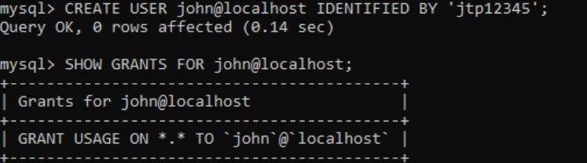
mysql> GRANT ALL ON mystudentdb.* TO john@localhost;
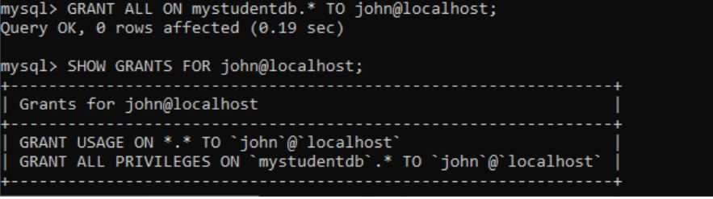
mysql> REVOKE ALL, GRANT OPTION FROM john@localhost;
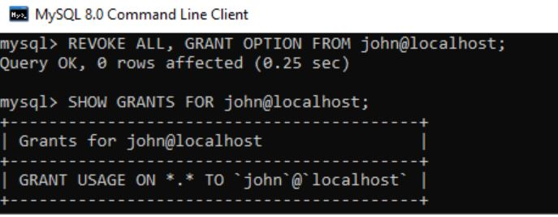
SQL Joins
A JOIN clause is used to combine rows from two or more tables, based on a related column between them.
Different Types of SQL JOINs :-
(INNER) JOIN: Returns records that have matching values in both tables
LEFT (OUTER) JOIN: Returns all records from the left table, and the matched records from the right table
RIGHT (OUTER) JOIN: Returns all records from the right table, and the matched records from the left table
FULL (OUTER) JOIN: Returns all records when there is a match in either left or right table
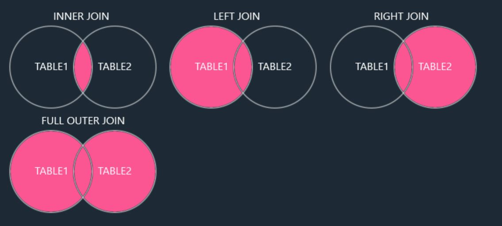
Example of SQL Joins :-
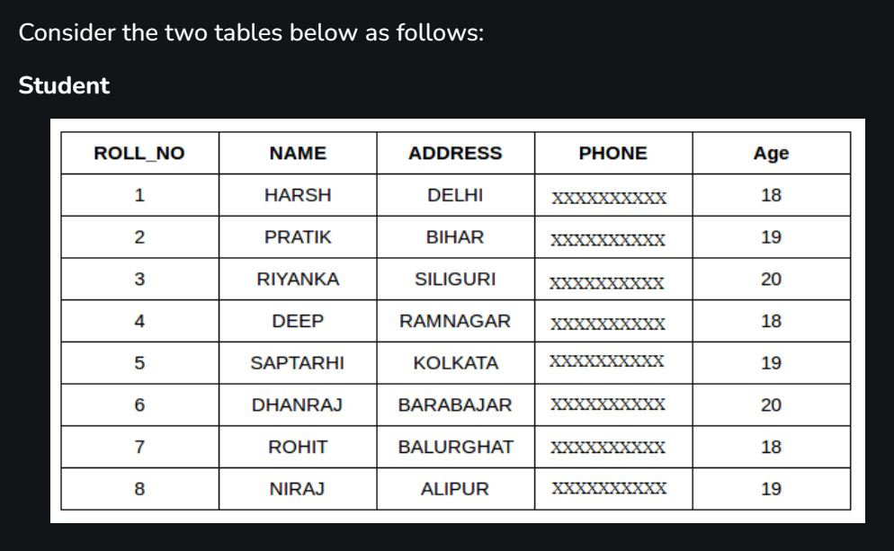
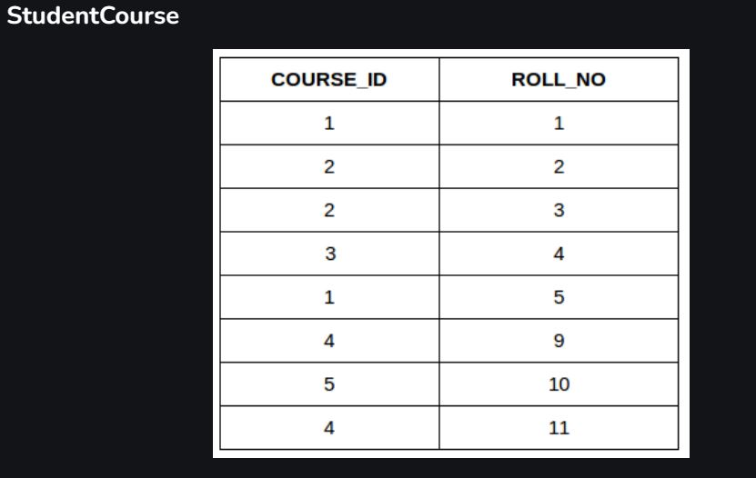
SELECT StudentCourse.COURSE_ID, Student.NAME, Student.AGE FROM Student
INNER JOIN StudentCourse
ON Student.ROLL_NO = StudentCourse.ROLL_NO;
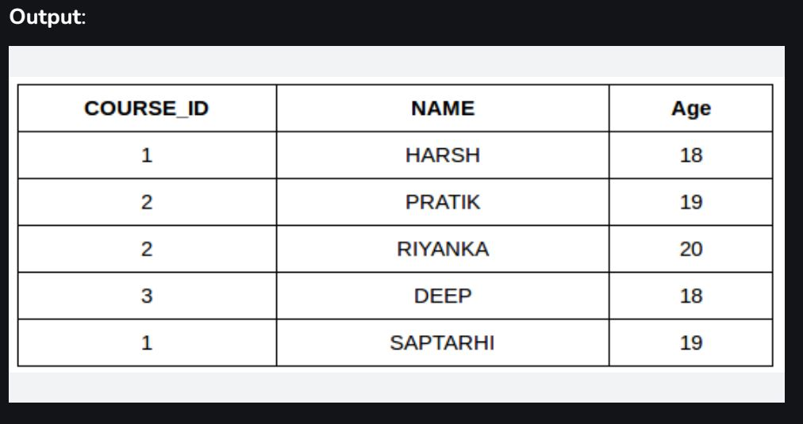
Example Queries(LEFT JOIN):
SELECT Student.NAME,StudentCourse.COURSE_ID
FROM Student
LEFT JOIN StudentCourse
ON StudentCourse.ROLL_NO = Student.ROLL_NO;
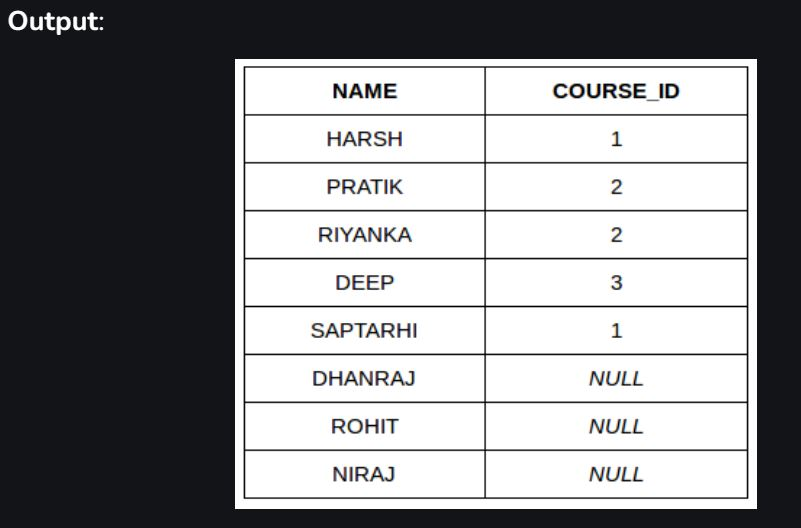
Example Queries(RIGHT JOIN):
SELECT Student.NAME,StudentCourse.COURSE_ID
FROM Student
RIGHT JOIN StudentCourse
ON StudentCourse.ROLL_NO = Student.ROLL_NO;
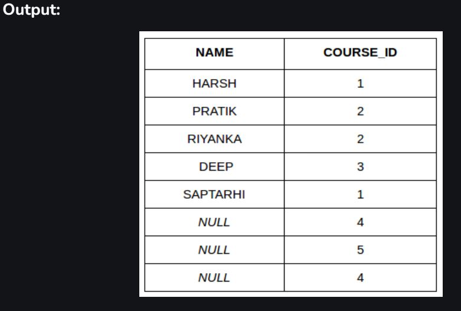
Example Queries(FULL JOIN):
SELECT Student.NAME,StudentCourse.COURSE_ID
FROM Student
FULL JOIN StudentCourse
ON StudentCourse.ROLL_NO = Student.ROLL_NO;
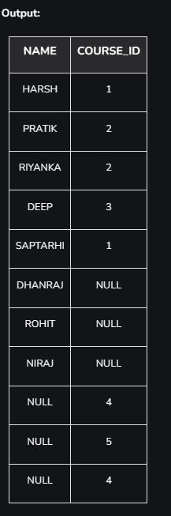
Introduction of PL/SQL
PL/SQL is a block structured language that enables developers to combine the power of SQL with
procedural statements.All the statements of a block are passed to oracle engine all at once which
increases processing speed and decreases the traffic.
Basics of PL/SQL :-
PL/SQL stands for Procedural Language extensions to the Structured Query Language (SQL).
PL/SQL is a combination of SQL along with the procedural features of programming languages.
Oracle uses a PL/SQL engine to processes the PL/SQL statements.
PL/SQL includes procedural language elements like conditions and loops. It allows declaration of constants
and variables, procedures and functions, types and variable of those types and triggers.
Disadvantages of SQL :-
SQL doesn’t provide the programmers with a technique of condition checking, looping and branching.
SQL statements are passed to Oracle engine one at a time which increases traffic and decreases speed.
SQL has no facility of error checking during manipulation of data.
Features of PL/SQL :-
PL/SQL is basically a procedural language, which provides the functionality of decision making, iteration
and many more features of procedural programming languages.
PL/SQL can execute a number of queries in one block using single command.
One can create a PL/SQL unit such as procedures, functions, packages, triggers, and types, which are stored
in the database for reuse by applications.
PL/SQL provides a feature to handle the exception which occurs in PL/SQL block known as exception handling
block.
Applications written in PL/SQL are portable to computer hardware or operating system where Oracle is
operational.
Structure of PL/SQL Block: :-
PL/SQL extends SQL by adding constructs found in procedural languages, resulting in a structural language
that is more powerful than SQL. The basic unit in PL/SQL is a block. All PL/SQL programs are made up of
blocks, which can be nested within each other.
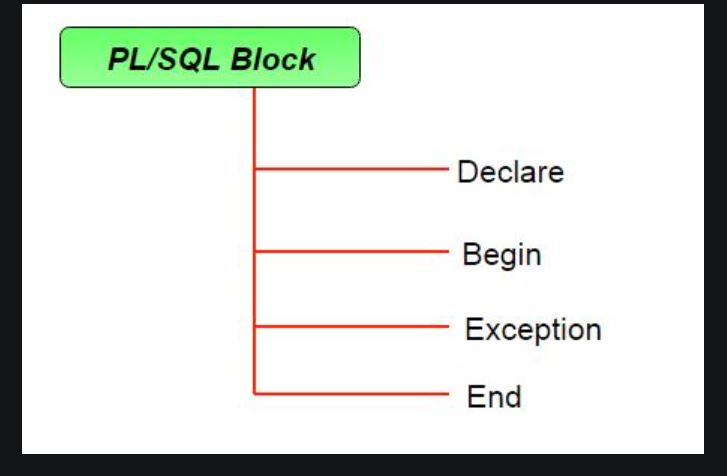
Typically, each block performs a logical action in the program. A block has the following structure:
DECLARE
declaration statements;
BEGIN
executable statements
EXCEPTIONS
exception handling statements
END;
PL/SQL Variables
A variable is a meaningful name which facilitates a programmer to store data temporarily during the
execution of code. It helps you to manipulate data in PL/SQL programs. It is nothing except a name given
to a storage area. Each variable in the PL/SQL has a specific data type which defines the size and
layout of the variable's memory.
A variable should not exceed 30 characters. Its letter optionally followed by more letters, dollar
signs, numerals, underscore etc.
Example of Initializing Variable :-
DECLARE
a integer := 30;
b integer := 40;
c integer;
f real;
BEGIN
c := a + b;
dbms_output.put_line('Value of c: ' || c);
f := 100.0/3.0;
dbms_output.put_line('Value of f: ' || f);
END;
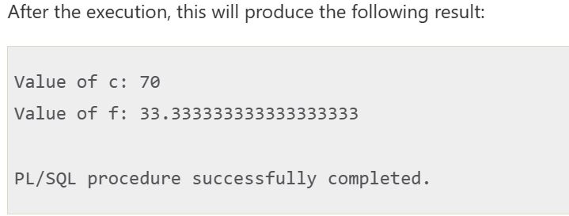
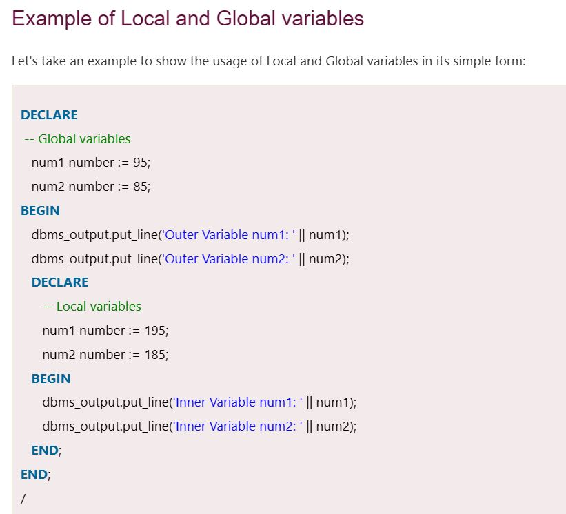
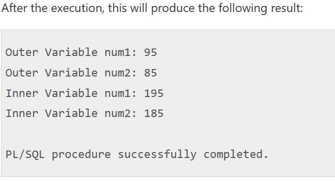
PL/SQL Procedure
The PL/SQL stored procedure or simply a procedure is a PL/SQL block which performs one or more specific
tasks. It is just like procedures in other programming languages.
The procedure contains a header and a body.
Header:- The header contains the name of the procedure and the parameters or variables passed to the
procedure.
Body:- The body contains a declaration section, execution section and exception section similar to a
general PL/SQL block.
Example of Procedure :-
Table creation:-
create table user(id number(10) primary key,name varchar2(100)); Procedure Code:-
create or replace procedure "INSERTUSER"
(id IN NUMBER,
name IN VARCHAR2)
is
begin
insert into user values(id,name);
end;
/ Output:-
Procedure created.
PL/SQL program to call procedure :-
BEGIN
insertuser(101,'Rahul');
dbms_output.put_line('record inserted successfully');
END;
/
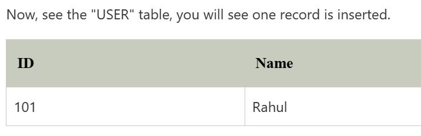
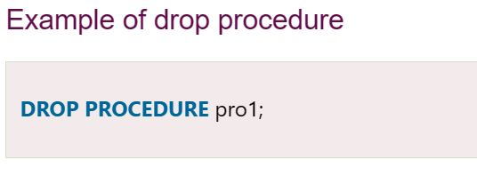
PL/SQL Functions
The PL/SQL Function is very similar to PL/SQL Procedure. The main difference between procedure and a
function is, a function must always return a value, and on the other hand a procedure may or may not
return a value. Except this, all the other things of PL/SQL procedure are true for PL/SQL function too.
PL/SQL Function Example :-
create or replace function adder(n1 in number, n2 in number)
return number
is
n3 number(8);
begin
n3 :=n1+n2;
return n3;
end;
/ Now write another program to call the function.
DECLARE
n3 number(2);
BEGIN
n3 := adder(11,22);
dbms_output.put_line('Addition is: ' || n3);
END;
/ Output:-
Addition is: 33
Statement processed.
0.05 seconds
PL/SQL function example using table :-
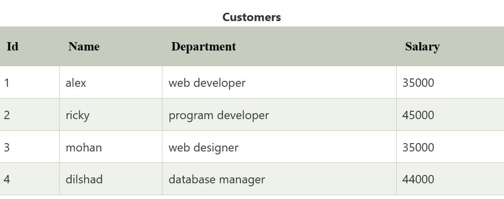
Create a function:-
CREATE OR REPLACE FUNCTION totalCustomers
RETURN number IS
total number(2) := 0;
BEGIN
SELECT count(*) into total
FROM customers;
RETURN total;
END;
/
Calling the PL/SQL Function:-
DECLARE
c number(2);
BEGIN
c := totalCustomers();
dbms_output.put_line('Total no. of Customers: ' || c);
END;
/
Output:-
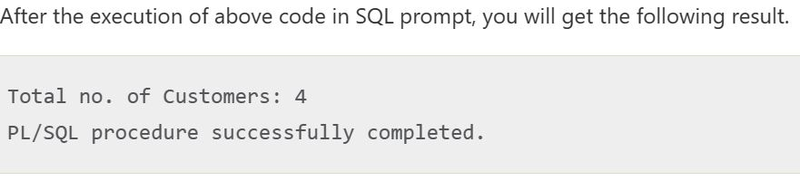
PL/SQL Cursor
When an SQL statement is processed, Oracle creates a memory area known as context area. A cursor is a
pointer to this context area. It contains all information needed for processing the statement. In
PL/SQL, the context area is controlled by Cursor. A cursor contains information on a select statement
and the rows of data accessed by it.
A cursor is used to referred to a program to fetch and process the rows returned by the SQL statement,
one at a time.
There are two types of cursors:
Implicit Cursors
Explicit Cursors
PL/SQL Cursors Example :-
PL/SQL Implicit Cursor Example
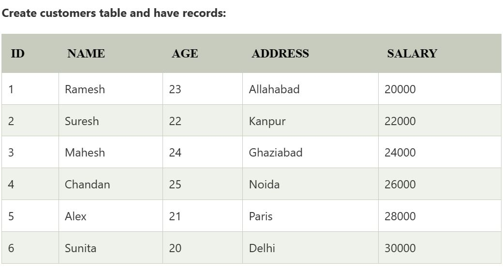
Create a procedure:-
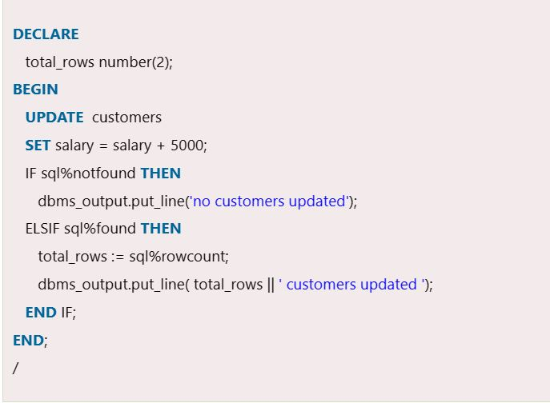 Output<:-
6 customers updated
PL/SQL procedure successfully completed.
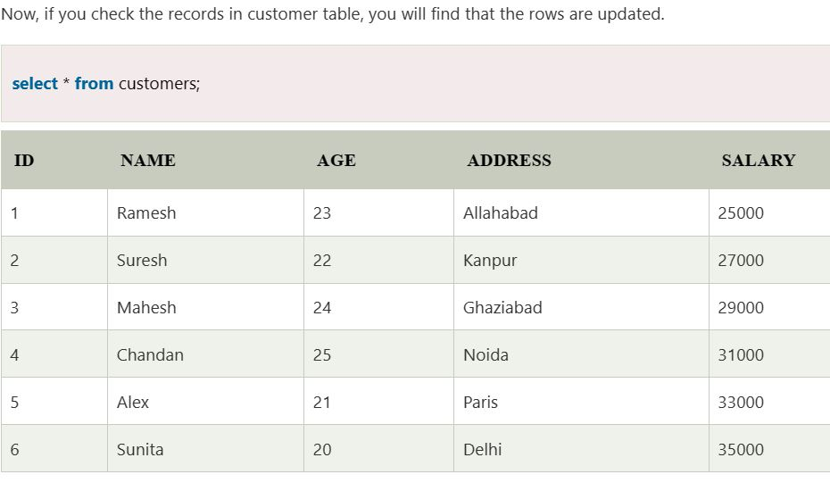 PL/SQL Explicit Cursor Example :-
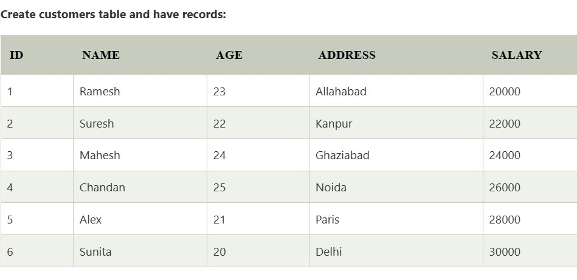
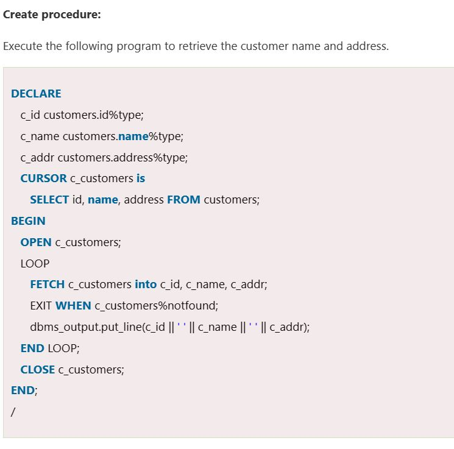
Ouput:-
1 Ramesh Allahabad
2 Suresh Kanpur
3 Mahesh Ghaziabad
4 Chandan Noida
5 Alex Paris
6 Sunita Delhi
PL/SQL procedure successfully completed.
PL/SQL Trigger
Trigger is invoked by Oracle engine automatically whenever a specified event occurs.Trigger is stored
into database and invoked repeatedly, when specific condition match.
Triggers are stored programs, which are automatically executed or fired when some event occurs.
Triggers are written to be executed in response to any of the following events.
A database manipulation (DML) statement (DELETE, INSERT, or UPDATE).
A database definition (DDL) statement (CREATE, ALTER, or DROP).
A database operation (SERVERERROR, LOGON, LOGOFF, STARTUP, or SHUTDOWN).
Triggers could be defined on the table, view, schema, or database with which the event is associated.
PL/SQL Trigger Example :-
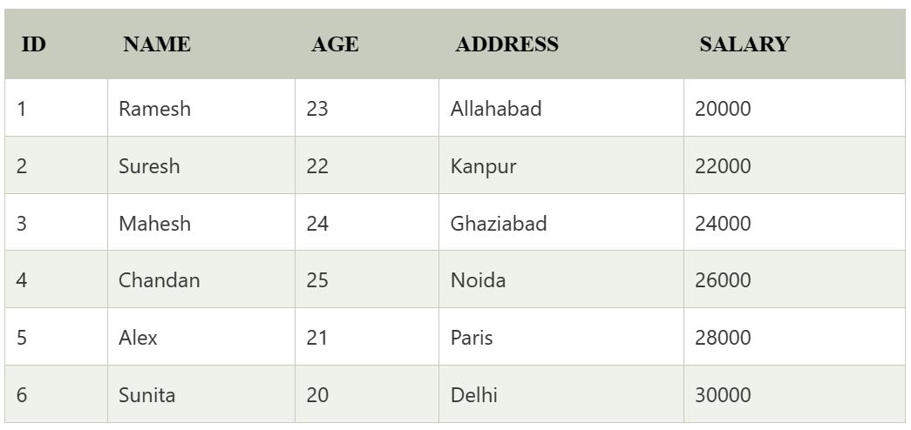
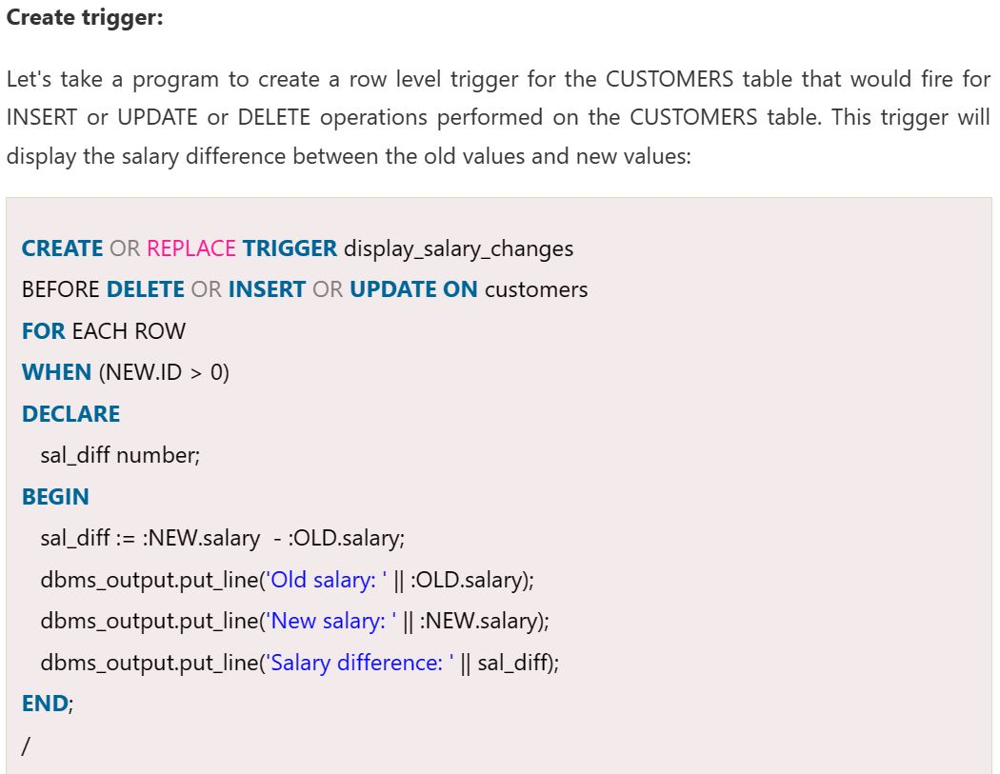
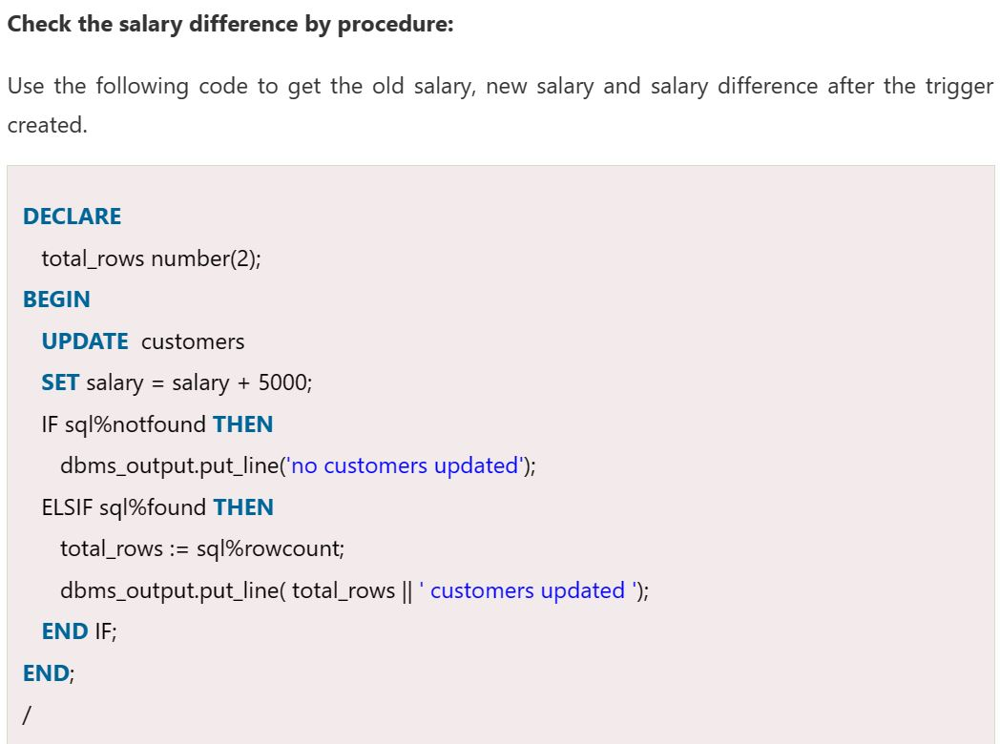
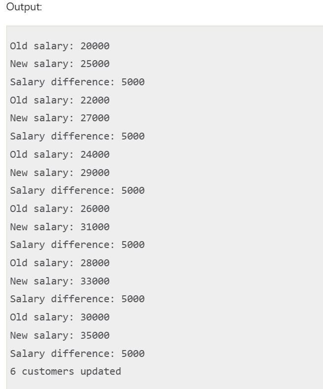
PL/SQL Exception Handling
An error occurs during the program execution is called Exception in PL/SQL.
PL/SQL facilitates programmers to catch such conditions using exception block in the program and an
appropriate action is taken against the error condition.
There are two type of exceptions:
System-defined Exceptions
User-defined Exceptions
PL/SQL Exception handling Example :-
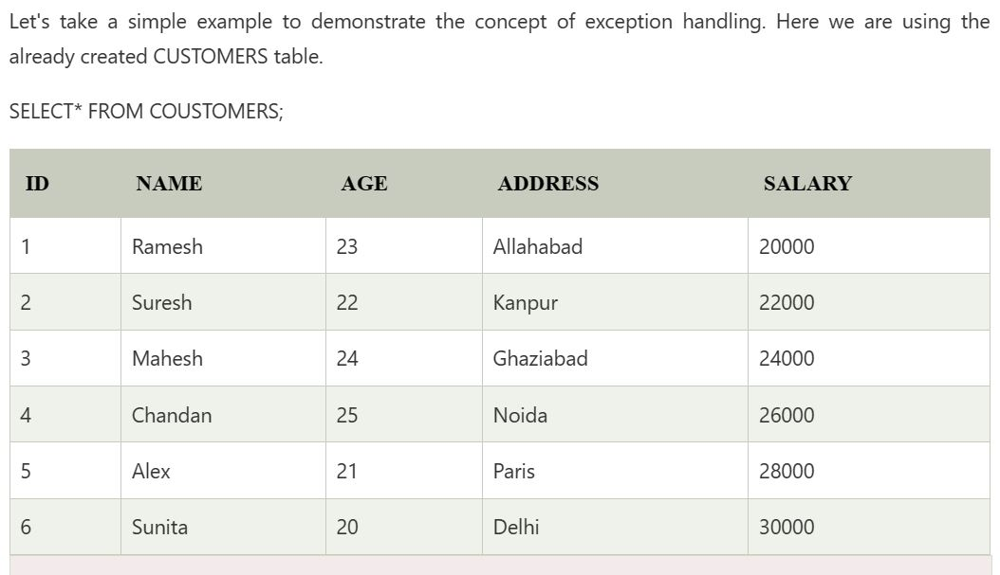
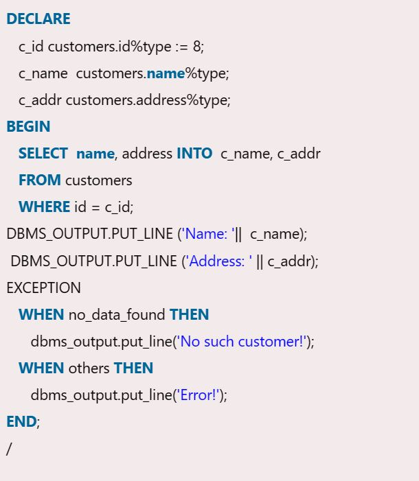 Output:-
After the execution of above code at SQL Prompt, it produces the following result:
No such customer!
PL/SQL procedure successfully completed. The above program should show the name and address of a customer as result whose ID is given.
But there is no customer with ID value 8 in our database, so the program raises the run-time exception
NO_DATA_FOUND, which is captured in EXCEPTION block.